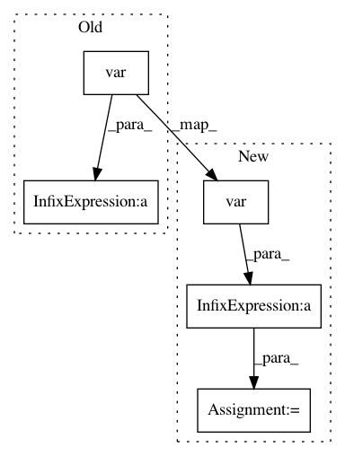

90c7286c62845066565fa9af7f058d5a03179fb2,pymc3/tests/test_stats.py,TestStats,test_waic,#TestStats#,70
Before Change
log_py = st.binom.logpmf(np.atleast_2d(x_obs).T, 5, trace["p"]).T
lppd = np.sum(np.log(np.mean(np.exp(log_py), axis=0)))
p_waic = np.sum(np.var(log_py, axis=0))
actual = -2 * lppd + 2 * p_waic
assert_almost_equal(calculated, actual, decimal=2)
After Change
log_py = st.binom.logpmf(np.atleast_2d(x_obs).T, 5, trace["p"]).T
lppd_i = np.log(np.mean(np.exp(log_py), axis=0))
vars_lpd = np.var(log_py, axis=0)
waic_i = - 2 * (lppd_i - vars_lpd)
actual_waic_se = np.sqrt(len(waic_i) * np.var(waic_i))
actual_waic = np.sum(waic_i)
In pattern: SUPERPATTERN
Frequency: 3
Non-data size: 5
Instances
Project Name: pymc-devs/pymc3
Commit Name: 90c7286c62845066565fa9af7f058d5a03179fb2
Time: 2016-10-12
Author: aloctavodia@gmail.com
File Name: pymc3/tests/test_stats.py
Class Name: TestStats
Method Name: test_waic
Project Name: elfi-dev/elfi
Commit Name: adea709c364eeaf34bf188e35d396bdf19761eb7
Time: 2016-10-28
Author: jarno.lintusaari@aalto.fi
File Name: elfi/examples/ma2.py
Class Name:
Method Name: autocov
Project Name: abhiskk/fast-neural-style
Commit Name: e15bc113b83c2bdf980d2557971888d10011ef29
Time: 2017-03-14
Author: abhishekkadiyan@gmail.com
File Name: neuralstyle/transformernet.py
Class Name: InstanceNormalization
Method Name: forward